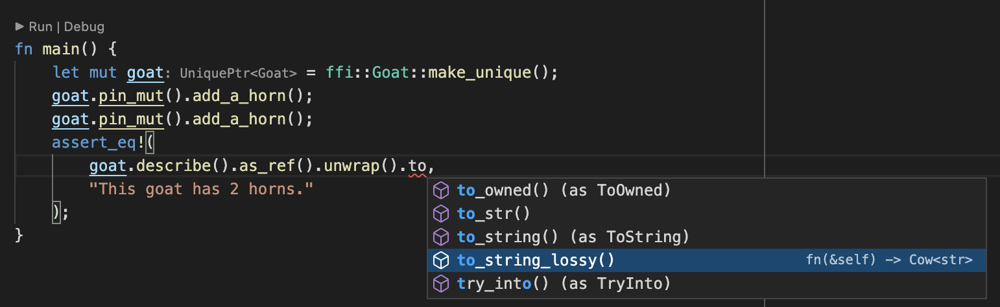
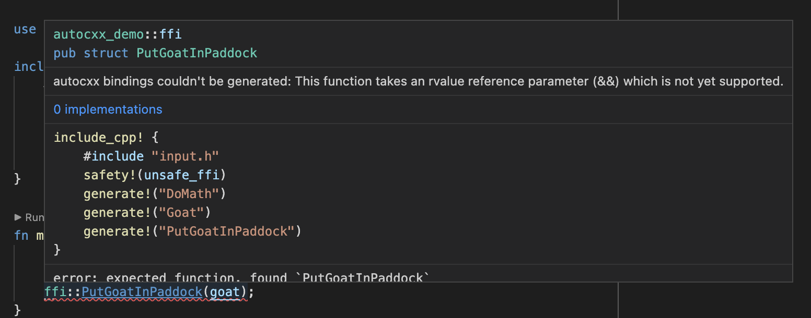

Workflow
C++ is complex, and autocxx can’t ingest everything.
First tip - use an IDE. Type annotation and autocompletion is incredibly helpful in an autocxx
context, where you may be dealing with UniquePtr<T> and Option<&T> and Pin<&mut T> very often.

As you’ll see, it’s also essential when autocxx can’t produce bindings for some reason.
What if autocxx can’t generate bindings?
This bit is important.
When you use autocxx, you’ll ask it to generate Rust bindings for C++ types or functions using
generate! directives.
If you name something specifically in a generate! or generate_pod! directive - a function
or a type - and autocxx can’t generate bindings for it: the build will fail, and the error
will say what stopped it.
If you ask to generate bindings for an entire type, autocxx will generate bindings for as
many methods as possible. For those methods where it can’t generate bindings, it will instead
generate some placeholder function or struct with documentation explaining what went wrong:

This is why it’s crucial to use an IDE with autocxx.
How can I see what bindings autocxx has generated?
Options:
- Use an IDE. (Did we mention, you should use an IDE?)
- Run
cargo doc --document-private-items. - Use
cargo expand. - Add
pretty!()to yourinclude_cpp!and read the fileAUTOCXX_RS_FILEnames. Without it that file is a single line of tokens.
How to work around cases where autocxx can’t generate bindings
Your options are:
- Write extra C++ functions with simpler parameters or return types, and generate bindings to them, instead.
- Write some manual
#[cxx::bridge]bindings - see below.
Usually, you can solve problems by writing a bit of additional C++ code. For example,
supposing autocxx can’t understand your type Sandwich<Ham>. Instead it will give
you a fairly useless opaque type such as Sandwich_Ham. You can write additional
C++ functions to unpack the opaque type into something useful:
const Ham& get_filling(const Sandwich<Ham>& ham_sandwich);
Withholding one function
Sometimes the trouble is a single method of an otherwise useful class:
autocxx generates something for it which won’t compile. The only way out used
to be taking the whole class out of your generate! directives, because
block! names a type
and there was nothing smaller to name.
block_functions!
names that one function instead. The rest of the class binds as usual:
include_cpp! {
#include "my_header.h"
safety!(unsafe_ffi)
generate!("ns::Engine")
block_functions!("ns::Engine::set_mode")
}Name the function as C++ names it: a member function with the class it belongs
to in front of it, a free function without a class, with its namespaces, as
generate! names one. The namespaces may be left off, which costs what it
costs in throws! - a name written short claims every function answering to
it, in every class and every namespace. The class may not be left off:
block_functions!("ns::set_mode") names a free function in ns, never a
method of some class in ns.
The whole overload set of that name goes. C++ picks between overloads by their arguments, so a directive naming one name has no way to say which of them it meant.
In place of each binding you get the documentation stub every discarded binding leaves, saying the function was blocked - nothing disappears silently. A blocked member of a base class is not imported into the classes which derive from it. Nor does a Rust subclass get an override for a blocked virtual method - so blocking a pure virtual leaves that subclass’s C++ peer abstract, which the C++ compiler will not accept.
Constructors and the destructor cannot be named this way, and no directive
withholds an explicitly declared one. What there is instead is narrower:
block_constructors!
names a class and stops autocxx synthesizing the special members C++ declares
implicitly for it - constructors and destructors the class declares itself are
bound as usual.
A block_functions! which names no function autocxx met is a build error,
since it withheld nothing.
Mixing manual and automated bindings
autocxx uses cxx underneath, and its build process will happily spot and
process manually-crafted cxx::bridge mods which you include in your
Rust source code. A common pattern could be to use autocxx to generate
all the bindings possible, then hand-craft a cxx::bridge mod for the
remainder where autocxx falls short.
To do this, you’ll need to use the ability of one cxx::bridge mod to refer to types from another, for example:
autocxx::include_cpp! {
#include "foo.h"
safety!(unsafe_ffi)
generate!("take_A")
generate!("A")
}
#[cxx::bridge]
mod ffi2 {
unsafe extern "C++" {
include!("foo.h");
type A = crate::ffi::A;
fn give_A() -> UniquePtr<A>; // in practice, autocxx could happily do this
}
}
fn main() {
let a = ffi2::give_A();
assert_eq!(ffi::take_A(&a), autocxx::c_int(5));
}In the example above, we’re referring from manual bindings to automated bindings.
You can also do it the other way round using extern_cpp_opaque_type!:
autocxx::include_cpp! {
#hexathorpe include "input.h"
safety!(unsafe_ffi)
generate!("handle_a")
generate!("create_a")
extern_cpp_opaque_type!("A", ffi2::A)
}
#[cxx::bridge]
pub mod ffi2 {
unsafe extern "C++" {
include!("input.h");
type A;
}
impl UniquePtr<A> {}
}
fn main() {
let a = ffi::create_a();
ffi::handle_a(&a);
}My build entirely failed
autocxx should nearly always successfully parse the C++ codebase and
generate some APIs. It’s reliant on bindgen, but bindgen is excellent
and rarely bails out entirely.
If it does, you may be able to use the block! macro.
We’d appreciate a minimized bug report of the troublesome code - see contributing.
Enabling autocompletion in a rust-analyzer IDE
You’ll need to enable both:
- Rust-analyzer: Proc Macro: Enable
- Rust-analyzer: Experimental: Proc Attr Macros
Next steps
Now you’ve read what can go wrong with autocxx, and how to diagnose problems - the next step is to give it a try!
Treat the rest of this manual as a reference.